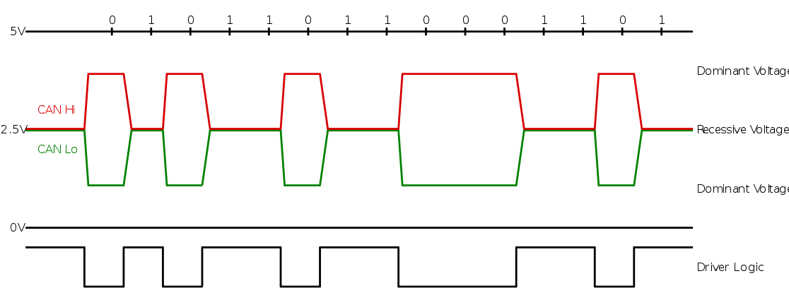

further info on canbus:¶
Volvo uses extended identifiers:¶
CAN frames follow a defined format: all standard frames have an 11-bit identifier and up to 8 bytes of data. Extended frames allow 29 bit identifiers, but only the same 8 bytes of data. CAN frames also include checksums, and most CAN implementations in microcontrollers will automatically insert / verify checksums in hardware.
